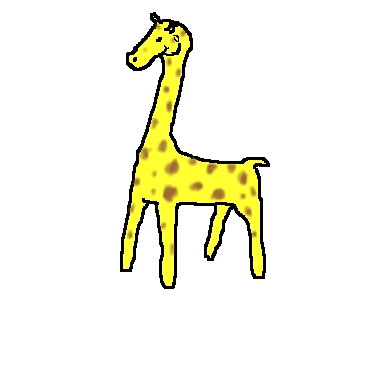
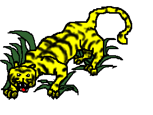

This is the kangaroo from Australia. It bounces and bounces
anywhere it wants to go.
 This is the giraffe. It has a very long neck to reach the tender leaves up high on a tree. They are very tall and very quiet animals.

This is the tiger. It is a big cat that hunts in the jungle. Be careful not to run into
one of these big cats in the jungle!. It goes GRRRRRR.......